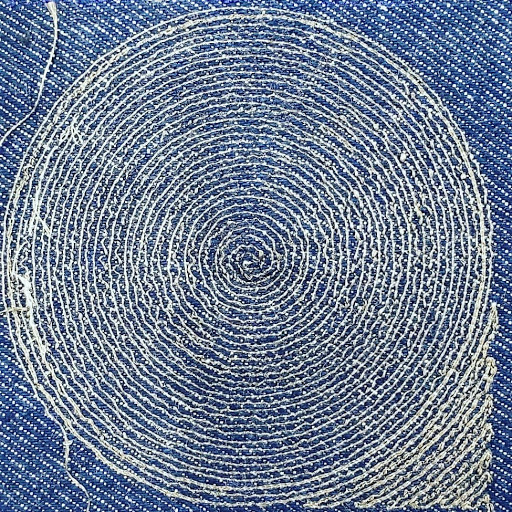
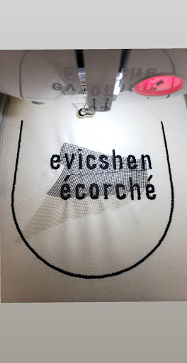
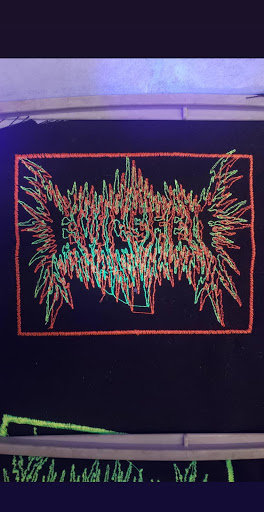
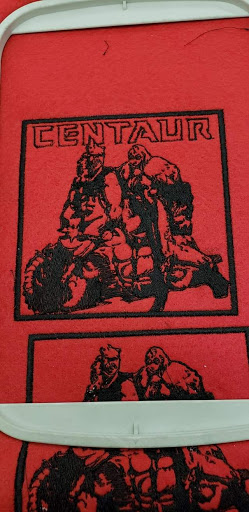

Machine Embroidery
Various Examples
Here are some examples of what you can do with a Brother machine embroiderer. The first example uses conductive thread in the pattern of a spiral so that the fabric can be used as a speaker. Other examples feature applique and fluorescent thread that glows under UV light.



